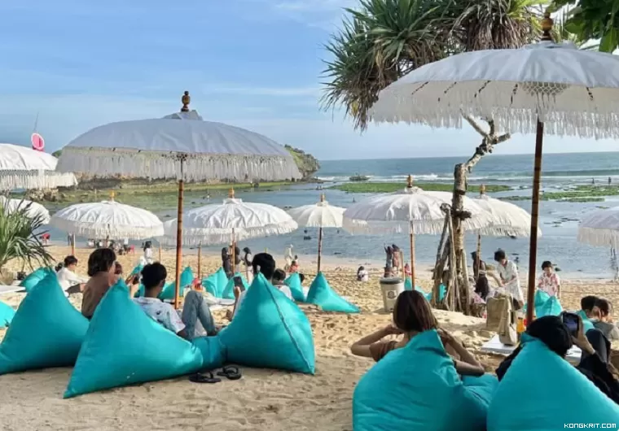
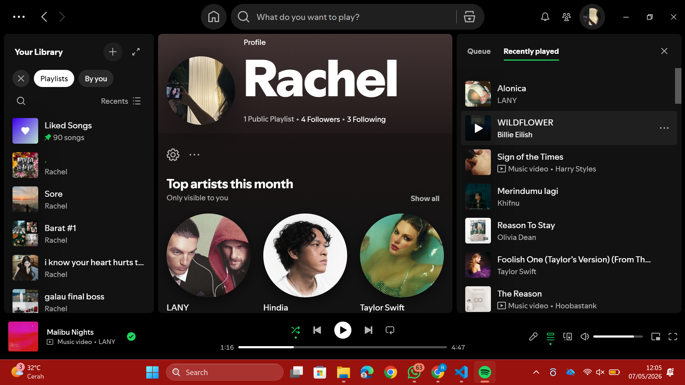

Hal-hal yang biasanya aku lakukan untuk menikmati waktu luang (kalo ada sih)

Aku suka mengunjungi tempat baru dan menikmati suasana alam yang berbeda dari rutinitas sehari-hari.
Tidur jadi salah satu hobi favoritku sihh

Aku sering banget dengerin musik, pokoknya mah 24/7 deh, apalagi kalo lagi santai atau butuh mood booster.